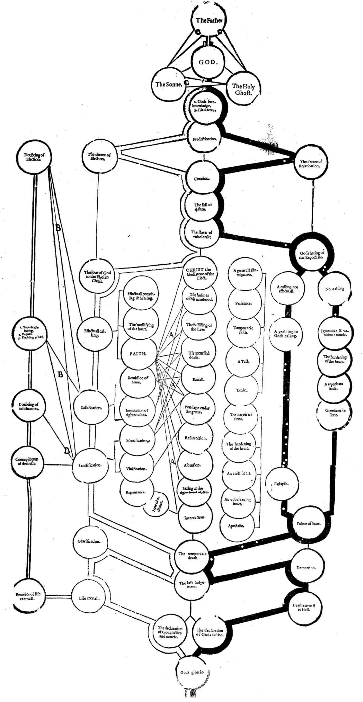

A GOLDEN CHAINE:
OR, THE DESCRIPTION OF THEOLOGIE
Containing the order of the cauſes of Saluation and Damnation, according to Gods word. A view whereof is to be ſeene in the Table annexed.
Hereunto is adioyned the order which M. Theodore Beza vſed in comforting afflicted conſciences.
LONDON
Printed by IOHN LEGATT.
1623.
To the Chriſtian Reader.
CHRISTIAN Reader, there are at this day foure ſeuerall opinions of the order of Gods Predeſtination. The firſt is, of the olde and new Pelagians; who place the cauſes of Gods Predeſtination in man; in that they holde, that God did ordaine men either to life or death, according as hee did fore-ſee, that they would by their naturall Free-will, eyther reiect or receiue grace offered. The ſecond of them, who (of ſome) are tearmed Lutherans; which teach, that God fore-ſeeing, how all mankinde being ſhut vp vnder beliefe, would therefore reiect grace offered, did hereupon purpoſe to chooſe ſome to ſaluation of his meere mercie, without any reſpect of their faith or good workes, and the reſt to reiect, beeing mooued to doe this, becauſe hee did eternally fore-ſee that they would reiect his grace offered them in the Goſpell. The third Semi-Pelagian Papiſts, which aſcribe Gods predeſtination, partly to mercy, and partly to mens fore-ſeene preparations and meritorious workes. The fourth, of ſuch as teach, that the cauſe of the execution of Gods predeſtination, is his mercy in Chriſt, in them which are ſaued; and in them which periſh, the fall and corruption of man: yet ſo, as that the decree and eternall counſell of God, concerning them both, hath not any cauſe beſides his will and pleaſure. Of theſe foure opinions, the three former I labour to oppugne, as erronious, and to maintaine the laſt, as being truth, which will beare weight in the ballance of the Sanctuary.
A further diſcourſe whereof, here I make bold to offer to thy godly conſideration: in reading whereof, regard not ſo much the thing it ſelfe penned very ſlenderly, as mine intent and affection: who deſire among the reſt, to caſt my mite into the treaſurie of the Church of England, and, for want of gold, pearle, and pretious ſtone, to bring a Rammes skinne or twaine, and a little Goates haire, to the building of the Lords tabernacle, Exod. 35. 23.
The Father of our Lord Ieſus Chriſt grant, that according to the riches of his glory, thou maiſt be ſtrengthened by his ſpirit in the inner man, that Chriſt may dwell in thy heart by faith; to the end that thou being rooted and grounded in loue, maieſt be able to comprehend with all Saints, what is the breadth, and length, and height thereof; and to know the loue of Chriſt which paſſeth knowledge, that thou maieſt be filled with all fulneſſe of God. Amen. Farewell, Iuly 23 the yeare of the laſt patience of Saints. 1592
Thine in Chriſt Ieſus,
William Perkins
A ſuruey, or Table declaring the order
of the cauſes of Saluation and Damnation, according to Gods word. It may be in ſtead of an ocular Catechiſme to them which cannot read: for by the pointing of the finger they may ſenſibly perceiue the chiefe points of religion, and the order of them.
God created all things for himſelfe, and the wicked man for the euill day. Prov. 16. 4.
Hath not the potter power ouer the clay, to make of the ſame lumpe one veſſell to honour, and another to diſhonour? Rom. 9. 21.
If any be in Chriſt, let him be a new creature. 2. Cor. 5. 17.

To the Reader. The white line ſheweth the order of the cauſes of ſaluation from the firſt to the laſt. 1
The blacke line ſheweth the order of the cauſes of damnation. 1
Lines. A. A. A. ſhew, how faith doth apprehend Chriſt and all his benefits, and applieth them to the perſon of euery beleeuer for his iuſtification and ſanctification. 1
Lines B. B. B. deſcending, likewiſe ſhew the tentation of the godly, and their remedies. 1
Inside ſpaces C. C. C. ſhew the communication of the Godhead from the Father to the Sonne, and from them both to the holy Ghoſt. 1
O the altitude of the riches, both of the wiſedome and knowledge of God! How vnſearchable are his iudgements, and his waies paſt finding out? Rom. 11.33.
I count all things but dung, that I may winne Chriſt. Philip 3. 8.
Ignatius ſaying, My loue is crucified
Transcriber's note: The scan here is incomplete, so the first word of the line is an approximate reconstruction.
Of the body of Scripture, and Theology.
THE Bodie of Scripture is a doctrine ſufficient to liue well.
It comprehendeth many holy ſciences, whereof one is principal, others are handmaids or retainers.
The principall ſcience is Theologie.
Theologie, is the ſcience of liuing bleſſedly for euer. Bleſſed life ariſeth from the knowledge of God, Ioh. 17. 3. This is life eternal, that they know thee to be the only very God, and whom thou haſt ſent Chriſt Ieſus. Iſa. 53. 11. By his knowledge ſhal my righteous ſeruant (viz. Chriſt) iuſtifie many. And therefore it ariſeth likewiſe from the knowledge of our ſelues, becauſe we know God by looking into our ſelues.
Theologie hath two parts: the firſt of God, the ſecond of his workes.
Of God, and the nature of God.
THat there is a God, it is euident, 1. by the courſe of nature: 2. by the nature of the ſoule of man: 3. by the diſtinction of things honeſt and diſhoneſt: 4. by the terror of conſcience: 5. by the regiment of ciuill ſocieties: 6. the order of all cauſes hauing euer recourſe to ſome former beginning: 7. the determination of all things to their ſeuerall ends: 8. the conſent of all men well in their wits.
God is Iehouah Elohim, Exod. 6. 2, 3. And Elohim ſpake vnto Moſes, and ſaid vnto him, I am Iehouah: and I appeared vnto Abraham, to Iſaac, and to Iacob, by the name of God Almighty, but by my name Iehouah, was I not knowne vnto them. Exod. 3. 13. If they ſay vnto me, what is his name? What ſhall I ſay vnto them? And God anſwered Moſes, I am that I am: Alſo he ſaid, thus ſhalt thou ſay vnto the children of Iſrael, I am hath ſent me vnto you. And God ſpake further to Moſes, Thus ſhalt thou ſay vnto the children of Iſrael, Iehouah Elohim, &c. hath ſent me vnto you. 1 In theſe words, the firſt title of God, declareth his Nature, the ſecond his Perſons.
The nature of God, is his moſt liuely and moſt perfect eſſence.
The perfection of the nature of God, is the abſolute conſtitution thereof, whereby it is wholly complete within it ſelfe, Exod. 3. 13. I am that I am, 2 Act. 17. 24. God that made the world, and all things that are therin, ſeeing that he is the Lord of heauen and earth, dwelleth not in temples made with hands, neyther is worſhipped with mens hands, as though hee needed any thing; ſeeing he giueth to all life and breath, and all things. 3
The perfection of his Nature, is either Simpleneſſe, or the Infiniteneſſe thereof.
The Simpleneſſe of his nature, is that by which hee is voide of all Logicall relation in arguments. He hath not in him ſubiect or adiunct. Ioh. 5. 26. As the Father hath life in himſelfe, ſo hath he giuen to the Sonne to haue life in himſelfe: conferred with Ioh. 14. 6. I am the way, the truth, and the life. 1. Ioh. 1. 7. But if we walke in the light, as he is light: conferred with v. 5. God is light, and in him is no darknes. Hence it is manifeſt that to haue Life, and to be Life: to be in Light, and to be Light, in God are all one. Neither is God ſubiect to generality, or ſpeciality: whole, or parts: matter or that which is made of matter: for ſo there ſhould bee in God diuers things, and one more perfect then another. Therefore, whatſoeuer is in God, is his eſſence, and all that he is, he is by eſſence. The ſaying of Auguſtine in his 6. book and 4. chap. of the Trinity, is fit to prooue this; In God (ſaith he) to be, and to be iuſt or mightie, are all one: but in the mind of man, it is not all one to be, and to be mighty, or iuſt: for the mind may be deſtitute of theſe vertues, and yet a minde.
Hence it is manifeſt that the nature of God is immutable and ſpirituall.
Gods immutability of nature, is that by which he is voide of all compoſition, diuiſion, and change, Iam. 1. 17. With God there is no variablenes nor ſhadow of changing. Mal. 3. 6. I am the Lord, and am not changed. Where it is ſaid that God repenteth, &c. Gen. 6. 6. the meaning is, that God changeth the action, as men doe that repent: therefore repentance ſignifieth not any mutation in God, but in his actions, and ſuch things as are made and changed by him.
Gods nature is ſpirituall, in that it is incorporal, and therefore inuiſible, Ioh. 4. 24. God is a Spirit, 2. Cor. 3. 17. The Lord is the ſpirit. 1. Tim. 1. 17. To the King eternal, immortal, inuiſible only wiſe God, be glory & honor for euer & euer. Col. 1. 15. who is the image of the inuiſible God.
The infiniteneſſe of God is two-fold: his Eternitie, and exceeding greatneſſe.
Gods eternity, is that by which he is without beginning and ending. Pſal. 90. 2. Before the mountaines were made, and before thou hadſt formed the earth and the round world, euen from euerlaſting to euerlaſting, thou art our God. Reu. 1. 8. I am Alpha and Omega, that is, the beginning and ending, ſaith the Lord: Which is, Which was, and Which is to come,
Gods exceeding greatnes, is that by which his incomprehenſible nature is euery where preſent, both within & without the world. Pſ. 145. 3. Great is the Lord & worthy to be praiſed and his greatneſſe is incomprehenſible. 1. King. 8. 27. Is it true indeede that God will dwell on the earth? Behold the heauens, and the heauens of heauens are not able to containe thee: how much leſſe is this houſe that I haue built? Ier. 23. 24. Doe not I fill the heauen and earth, ſaith the Lord? Hence it is plaine.
Firſt, that he is onely one, and that indiuiſible, not many, Eph. 4. 5. One Lord, one faith, one baptiſme, one God and Father of all, Deut. 4. 35. Vnto thee it was ſhewed, that thou mighteſt know that the Lord he is God, and that there is none but he alone. 1. Cor. 8. 4. We know that an idol is nothing in the world, and that there is none other God but one: and there can be but one thing infinite in nature.
Secondly, that God is the knower of the heart. For nothing is hidden from that nature, which is within all things, and without all things, which is included in nothing, nor excluded from any thing. Becauſe. 1. King. 8. 39. The Lord ſearcheth all hearts, and vnderſtandeth euery worke of the minde. Pſal. 139. 1, 2. Thou knoweſt my ſitting downe, and my riſing vp, thou vnderſtandeſt my cogitation afarre off. 4
Transcriber's note: All three verses were quoted, but original reference only cited verse 13.
Transcriber's note: Likely intended to be Ex. 3. 14.
Transcriber's note: Both verses were quoted, but original reference only cited verse 24.
Transcriber's note: Original reference included verse 1, but only verse 2 was quoted.
Of the life of God.
HItherto we haue ſpoken of the perfection of Gods nature: Now followeth the life of GOD, by which the Diuine Nature is in perpetuall action, liuing, and moouing in it ſelfe. Pſal. 42. 2. My ſoule thirſteth for God, euen for the liuing God, when ſhall I come and appeare before the preſence of God? Heb. 3. 12. See there be not at any time in any of you an euill heart to depart from the liuing God.
The diuine Nature, is eſpecially in perpetuall operation by three attributes, the which doe manifeſt the operation of God towards his creatures. Theſe are his Wiſedome, Will, and Omnipotencie.
The wiſedome or knowledge of God, is that by the which God doth, not by certaine notions abſtracted from the things themſelues, but by his owne eſſence: nor ſucceſsiuely and by diſcourſe of reaſon, but by one eternall and immutable act of vnderſtanding, diſtinctly and perfectly know himſelfe, and all other things, though infinite, whether they haue bin or not. Math. 11. 27. No man knoweth the Sonne but the Father, nor the Father but the Sonne, and he to whom the Sonne will reueale him. Heb. 4. 13. There is nothing created, which is not manifeſt in his ſight: but all things are naked and open to his eyes, with whom we haue to do, Pſal. 147:5. His wiſedome is infinite.
Gods wiſedome hath theſe parts: his foreknowledge, and his counſell.
The foreknowledge of God, is that by which he moſt aſſuredly foreſeeth all things that are to come. Act. 2. 23. Him haue ye taken by the hands of the wicked, being deliuered by the determinate counſell and foreknowledge of God, and haue crucified and ſlaine. Rom. 8. 29. Thoſe which he knew before, he alſo predeſtinated to be made like to the image of his Sonne. This is not properly ſpoken of God, but by reaſon of men to whom things are paſt or to come.
The counſell of God, is that by the which he doth moſt rightly perceiue the beſt reaſon of all things that are done. Prou. 8. 14. I haue counſell and wiſedome, I am vnderſtanding, and I haue ſtrength.
The will of God, is that by the which he both moſt freely, and iuſtly with one act willeth all things. Rom. 9. 18. He hath mercie on whom he will, and whom he will he hardeneth. Eph. 1. 5. Who hath predeſtinate vs to be adopted through Ieſus Chriſt vnto himſelfe, according to the good pleaſure of his will. Iam. 4. 15. For that which you ſhould ſay, If the Lord will, and we liue we will doe this or that.
God willeth that which is good, by approuing it; that which is euill, in as much as it is euill, by diſallowing and forſaking it. And yet he voluntarily doth permit euill; becauſe it is good that there ſhould be euill. Act. 14. 16. Who in time paſt ſuffered all the Gentiles to walke in their owne waies. Pſal. 81. 12. So I gaue them vp to the hardnes of their heart, and they haue walked in their owne counſels.
The will of God, by reaſon of diuers obiects, hath diuers Names, and is either called Loue and Hatred, or Grace and Iuſtice.
The Loue of God is that, by the which God approoueth firſt himſelfe, and then all his creatures as they are good, without their deſert, and in them doth take delight. 1. Ioh. 4. 16. God is loue, and who ſo remaineth in loue, remaineth in God, and God in him. Ioh. 3. 16. So God loued the world, that he gaue his onely begotten Sonne, &c. Rom. 5. 8. God ſetteth out his loue towards vs, ſeeing that while we were yet ſinners, Chriſt died for vs.
The Hatred of God, is that by the which he diſliketh and deteſteth his creature offending, for his fault. 1 Cor. 10. 5. But many of thé the Lord miſliked, for they periſhed in the wildernes. Pſ. 5. 5. Thou hateſt al the workers of iniquity. Pſ. 45. 7. Thou haſt loued iuſtice & hated iniquity.
The grace of God, is that by which he freely declareth his fauour to his creatures. Rom. 11. 6. If it be of grace, it is no more of workes: otherwiſe grace is not grace; but if it be of works it is no more grace. Tit. 2. 11. 1 The ſauing grace of God ſhined to all men, teaching vs to deny impietie, &c.
The Grace of God, is either his goodneſſe, or his mercie.
The Goodneſſe of God, is that by which he being in himſelfe abſolutely good, doth freely exerciſe his liberalitie vpon his creatures, Matth. 19. 17. Why calleſt thou mee good? there is none good but one, euen God. Math. 5. 45. He maketh Sunne to ſhine vpon the good and bad, and he raineth vpon the iuſt and vniuſt.
Gods mercie, is that by which he freely aſſiſteth all his creatures in their miſeries. Eſa. 30. 18. Yet will the Lord waite, that he may haue mercy vpon you. Lam. 3. 22. It is the Lords mercy that we are not conſumed, becauſe his compaſſions faile not. Exod. 33. 19. I take pitie on whom I take pitie, and am mercifull to whom I am mercifull.
Gods iuſtice, is that by which he in all things willeth that which is iuſt. Pſal. 11. 7. The iuſt Lord loueth iuſtice. Pſal. 5. 4. For thou art not a God that loueth wickedneſſe.
Gods iuſtice is in word or deede.
Iuſtice in word, is that truth by which he conſtantly, and indeede willeth that which he hath ſaid. Rom. 3. 4. Let God be true, and euery man a lyar. Math. 24. 35. Heauen and earth ſhall paſſe away, but my word ſhall not paſſe away. Hence it is, that there is a certaine iuſtice of God in keeping his promiſe. 1. Ioh. 1. 9. If we confeſſe our ſinnes, God is faithfull and iuſt to forgiue our ſinnes, 2. Tim. 4. 8. Henceforth is laid vp for mee the crowne of righteouſneſſe, which the Lord the righteous iudge ſhal giue me at that day
Iuſtice in deede, is that by which he either diſpoſeth or rewardeth.
Gods diſpoſing Iuſtice, is that by which he, as a moſt free Lord, ordereth rightly al things in his actions. Pſal. 145. 17. The Lord is righteous in all his waies.
Gods rewarding Iuſtice, is that by which he rendreth to his creature according to his worke. 2. Theſſ. 1. 6. It is iuſtice with God, to render affliction to ſuch as afflict you, but to you which are afflicted, releaſing with vs. 2 1. Pet. 1. 17. Therefore if you call him Father, which without reſpect of perſon iudgeth according to euery mans worke, paſſe the time of your dwelling here in feare. Ierem. 51. 56. The Lord that recompenſeth, ſhall ſurely recompence.
The Iuſtice of God, is either his Gentlenes or Anger.
Gods Gentleneſſe, is that by which he freely rewardeth the righteouſneſſe of his creature. 2. Theſ. 1. 5. Which is a token of the righteous iudgment of God, that ye may be counted worthy the kingdome of God, for the which ye alſo ſuffer. Mat. 10. 41, 42. He that receiueth a Prophet, in the name of a Prophet: ſhall haue a Prophets reward: and he that receiueth a righteous man, in the name of a righteous man, ſhall haue the reward of a righteous man. And whoſoeuer ſhall giue vnto one of theſe little ones to drink a cup of cold water onely in the name of a Diſciple, verily I ſay vnto you, he ſhall not loſe his reward.
Gods Anger is that by which he willeth the puniſhment of the creature offending, Rom. 1. 18. For the wrath of God is reuealed from heauen againſt all vngodlineſſe, and vnrighteouſneſſe of men, which withhold the truth in vnrighteouſneſſe. Ioh. 3. 36. He that obeyeth not the Sonne, ſhall not ſee life, but the wrath of God abideth on him.
Thus much concerning the will of GOD; Now followeth his Omnipotencie.
Gods Omnipotencie, is that by which hee is moſt able to performe euery worke. Math. 19. 26. With men this is impoſſible, but with God all things are poſſible.
Some things notwithſtanding are heere to be excepted. Firſt, thoſe things whoſe action argueth an impotencie, as to lie, to denie his word. Tit. 1. 2. Which God, that cannot lie, hath promiſed. 2. Tim. 2. 1. 3. 3 He cannot denie himſelfe. Secondly, ſuch things as are contrary to the nature of God, as to deſtroy himſelfe, and not to beget his Sonne from eternity. Thirdly, ſuch things as imply contradiction. For God cannot make a truth falſe; or that which is when it is not, to be.
Gods power may be diſtinguiſhed into an abſolute and actuall power.
Gods abſolute power, is that by which he can doe more, then he either doth or will doe. Matth. 3. 9. I ſay vnto you, God is able of theſe ſtones to raiſe vp children to Abraham. Phil. 3. 21. According to the working, whereby he is able to ſubdue euen all things to himſelfe.
Gods actuall power, is that by which hee cauſeth all things to be, which he freely willeth. Pſal. 135. 6. Al things which God wil, thoſe he doth in heauen, and in earth, and in all depths.
Trancriber's note: The original reference cites verse 11, but the quote includes a portion of verse 12 as well.
Transcriber's note: The original reference cites verse 6, but the quote includes a portion of verse 7 as well.
Transcriber's note: The reference should be to 2. Tim. 2. 13.
Of Gods glorie, and bleſſedneſſe.
OVt of the former attributes, by which the true Iehouah is diſtinguiſhed from a fained God, and from Idols, ariſe the glorie of God, and his bleſſedneſſe.
Gods glorie or maieſtie, is the infinite excellencie of his moſt ſimple and moſt holy diuine Nature. Heb. 1. 3. Who being the brightnes of his glorie, and the ingraued forme of his perſon, &c. Nehem. 9. 5. Let them praiſe thy glorious name, O God, which excelleſt aboue all thankeſgiuing and praiſe.
By this we ſee, that God onely can know himſelfe perfectly. Ioh. 6. 46. Not that any man hath ſeene the Father, ſaue he which is of God, he hath ſeen the Father. 1. Tim. 6. 16. Who only hath immortalitie, and dwelleth in the light that none can attaine vnto, whom neuer man ſaw, neither can ſee. Exod. 33. 20. Thou canſt not ſee my face.
Notwithſtanding there is a certaine manifeſtation of Gods glory: partly more obſcure, partly more apparent.
The more obſcure manifeſtation, is the viſion of Gods maieſtie in this life, by the eyes of the minde through the helpe of things perceiued by outward ſenſes. Iſa. 6. 1. I ſaw the Lord ſitting vpon an high throne, and lifted vp, and the lower parts therof filled the Temple. Exod. 33. 22. And while my glory paſſeth by, I will put thee in a cleft of the Rocke, and will couer thee with my hand whiles I paſſe by: after I will take away mine hand, and thou ſhalt ſee my backe parts, but my face ſhall not be ſeene. 1. Cor. 13. 12. Now we ſee as through a glaſſe darkely.
The more apparent manifeſtation of God, is the contemplation of him in heauen face to face. 1. Cor. 13. 12. But then ſhall we ſee face to face. Dan. 7. 9, 10. I beheld till the thrones were ſet vp, and the ancient of daies did ſit, whoſe garment was white as ſnow, &c.
Gods bleſſednes, is that by which God is in himſelfe, and of himſelfe all-ſufficient. Gen. 17. 1. I am God all-ſufficient, walke before me, and be thou vpright. Col. 2. 9. For in him dwels all the fulneſſe of the Godhead bodily. 1 Tim. 6. 15. Which in due time he ſhall ſhew, that is bleſſed and Prince only.
Concerning the perſons of the Godhead.
THe perſons are they, which ſubſiſting in one Godhead, are diſtinguiſhed by incommunicable properties. 1 Ioh. 5. 7. There are three that beare record in heauen, the Father, the Word, and the holy Ghoſt, and theſe three are one. Gen. 19. 24. Then Iehouah rained vpon Sodome, and vpon Gomorah, brimſtone, & fire from Iehouah in heauen. Ioh. 1. 1. In the beginning was the Word, and the Word was with God, and that Word was God.
They therefore are coequall, and are diſtinguiſhed not by degree, but by order.
The Conſtitution of a perſon is, when as a perſonall propertie, or the proper manner of ſubſiſting is adioined to the Deity, or the one diuine nature,
Diſtinction of perſons, is that, by which albeit euery perſon is one and the ſame perfect God, yet the Father is not the Sonne or the holy Ghoſt, but the Father alone; and the Sonne is not the Father or the holy Ghoſt, but the Sonne alone; and the H. Ghoſt is not the Father or the Sonne, but the holy Ghoſt alone: neither can they be diuided, by reaſon of the infinite greatneſſe of that moſt ſimple eſſence, which one and the ſame, is wholly in the Father, wholly in the Sonne, and wholly in the holy Ghoſt: ſo that in theſe there is diuerſitie of perſons, but vnitie in eſſence.
The communion of the perſons, or rather vnion, is that by which each one is in the reſt, and with the reſt, by reaſon of the vnity of the Godhead: and therefore euery each one doth poſſeſſe, loue, and glorifie another, and worke the ſame thing. Ioh. 14. 10. Beleeueſt thou not that I am in the Father, and the Father is in me? the word that I ſpeake vnto you I ſpeake not of my ſelfe, but the Father that dwelleth in me, he doth the workes, Prou. 8. 22. The Lord hath poſſeſſed me in the beginning of his way: I was before the workes of old. And v. 30. Then was I with him as a nouriſher, and I was daily his delight, reioycing alway before him. Ioh. 1. 1. In the beginning was the Word, and the Word was with God, and that Word was God, and cap. 5. 19. The Sonne can doe nothing of himſelfe, ſaue that he ſeeth the Father doe: for whatſoeuer things he doth, the ſame doth the Sonne alſo.
There be three perſons: the Father, the Sonne, and the holy Ghoſt. Matth. 3. 16, 17. And Ieſus, when he was baptized, came ſtraight out of the water, and loe, the heauens were opened vnto him, and Iohn ſaw the Spirit of God deſcending like a doue, and lighting vpon him: and loe, a voice came from heauen, ſaying, This is my beloued Sonne, in whom I am well pleaſed.
The Father, is a perſon without beginning, from all eternity begetting the Sonne, Heb. 1. 3. Who being the brightneſſe of the glory, and the ingraued forme of his perſon. Pſal. 2. 7. Thou art my Sonne, this day haue I begotten thee.
In the generation of the Sonne, theſe properties muſt be noted: I. He that begetteth, and he that is begotten are together, and not one before another in time. II. He that begetteth, doth communicate with him that is begotten, not ſome one part, but his whole eſſence. III. The Father begot the Sonne, not out of himſelfe, but within himſelfe.
The incommunicable property of the Father, is to be vnbegotten, to be a Father, and to beget. He is the beginning of actions, becauſe he beginneth euery action of himſelfe, effecting it by the Sonne and the holy Ghoſt. 1. Cor. 8. 6. Yet vnto vs, there is but one God, which is the Father, of whom are all things, and we in him, & one Lord Ieſus Chriſt, by whom are all things, and we by him. Rom. 11. 36. For of him, and through him, and for him, are all things.
The other two perſons haue the Godhead, or the whole diuine eſſence, of the Father by communication, namely, the Sonne and the holy Ghoſt.
The Sonne is the ſecond perſon, begotten of the Father from all eternitie. Heb. 1. 5. For vnto which of the Angels ſaid hee at any time, Thou art my Sonne, this day begate I thee? Col. 1. 15. Who is the image of the inuiſible God, the firſt borne of euery creature. Ioh. 1. 14. And we ſaw the glory thereof, as the glory of the onely begotten Sonne of the Father, Rom. 8. 32. He who ſpared not his owne Sonne.
Although the Sonne be begotten of his Father, yet neuertheleſſe he is of and by himſelfe very God: for he muſt be conſidered either according to his eſſence, or according to his filiation or Sonſhip. In regard of his eſſence, hee is (ɑυτοθɛος) 1 that is, of and by himſelf very God: for the Deitie which is common to all the three perſons, is not begotten. But as he is a perſon, and the Sonne of the Father, hee is not of himſelfe, but from another: for he is the eternall Sonne of his Father. And thus he is truly ſaid to be very God of very God.
For this cauſe he is ſaid to be ſent from the Father, Ioh. 8. 42. I proceeded forth, and came from God, neither came I of my ſelfe, but he ſent mee. This ſending taketh not away the equality of eſſence, and power, but declareth the order of the perſons, Ioh. 5. 18. Therefore the Iewes ſought the more to kil him, not onely becauſe he had broken the Sabbath: but ſaid alſo that God was his Father, and made himſelfe equall with God. Phil. 2. 6. Who being in the forme of God, thought it no robbery to be equall with God.
For this cauſe alſo he is the WORD of the Father, not a vaniſhing, but eſſentiall word, becauſe as a word is, as it were, begotten of the mind, ſo is the Sonne begotten of the Father; & alſo, becauſe he bringeth glad tidings from the boſome of his Father. Nazian. in his Oration of the Sonne. Baſill in his preface before Iohns Goſpell.
The property of the Sonne, is to bee begotten.
His proper manner of working, is to execute actions from the Father, by the holy Ghoſt. 1. Cor. 8. 6. Our Lord Ieſus Chriſt, by whom are all things, and we by him. Ioh. 5. 19. Whatſoeuer things he doth, the ſame doth the Son alſo.
The holy Ghoſt, is the third perſon, proceeding from the Father and the Sonne. Ioh. 15. 26. But when the Comforter ſhal come, whom I will ſend vnto you from the Father, euen the ſpirit of truth, which proceedeth of the Father, hee ſhall teſtifie of me. Rom. 8. 9. But yee are not in the fleſh, but in the ſpirit, ſeeing the ſpirit of God dwelleth in you. But if there be any that hath not the ſpirit of Chriſt he is not his. Ioh. 16. 13, 14. But when the Spirit of truth ſhall come: hee ſhall conduct you into all truth: for he ſhall not ſpeake of himſelfe, but whatſoeuer he heareth, hee ſhall ſpeake, and ſhall declare vnto you ſuch things as are to come. He shall glorifie me, for he ſhall receiue of mine, and ſhew it vnto you.
And albeit the Father, and the Sonne are two diſtinct perſons, yet are they both but one beginning of the holy Ghoſt.
What may be the eſſentiall difference betwixt proceeding, and begetting, neither the Scriptures determine, nor the Church knoweth.
The incommunicable property of the holy Ghoſt, is to proceede.
His proper manner of working is, to finiſh an action, effecting it, as from the Father and the Sonne.
Transcriber's note: The original used an archaic ligature for "-ος" that has no Unicode equivalent.
Of Gods workes, and his decree.
THus far concerning the firſt part of Theologie: the ſecond followeth, of the workes of God.
The workes of God, are all thoſe, which he doth out of himſelfe, that is, out of his diuine eſſence.
Theſe are common to the Trinitie, the peculiar manner of working alwaies reſerued to euery perſon.
The end of al theſe, is the manifeſtation of the glory of God. Rom. 11. 36. For him are all things, to him be glory for euer.
The worke, or action of God, is eyther his decree, or the execution of his decree.
The decree of God, is that by which God in himſelfe, hath neceſſarily, and yet freely, from al eternity determined al things. Eph. 1. 11. In whom alſo we are choſen, when we were predeſtinate, according to the purpoſe of him, which worketh all things after the counſell of his owne will. and v. 4. As he hath choſen vs in him before the foundation of the world. Math. 10. 29. Are not two ſparrowes ſold for a farthing, and not one of them falleth on the ground without your Father? Rom. 9. 21. Hath not the potter power on the clay to make of the ſame lumpe one veſſell to diſhonour, and another to honour.
Therefore the Lord, according to his good pleaſure, hath moſt certainely decreed euery thing and action, whether paſt, preſent, or to come, together with their circumſtances of place, time, meanes, and end.
Yea, he hath moſt iuſtly decreed the wicked works of the wicked. For if he had nilled thé, they ſhould neuer haue been at all. And albeit they of their owne nature, are and remaine wicked; yet in reſpect of Gods decree, they are ſome waies good: for there is not any thing abſolutely euill. 1. Pet. 3. 17. For it is better (if the will of God be ſo) that ye ſuffer for well doing, then for euill doing.
The thing which in it owne nature is euill, in Gods eternall counſell is reſpectiuely good, in that it is ſome occaſion & way to manifeſt the glory of God in his iuſtice, and his mercy.
Gods foreknowledge, is conioyned with his decree, and indeed is in nature before it: yet not in regard of God, but vs: becauſe knowledge goeth before the will and the effecting of a work. For we do nothing, but thoſe things that we haue before willed, neither doe we will any thing which we know not before.
Gods foreknowledge in it ſelfe, is not a cauſe why things are, but as it is conioyned with his decree. For things doe not therefore come to paſſe, becauſe that God did foreknow them: but becauſe hee decreede and willed them, therefore they come to paſſe.
The execution of Gods decree is that, by which all things in their time are accompliſhed which were foreknowne or decreed, and that euen as they were foreknown & decreed.
The ſame decree of GOD, is the firſt and principall working cauſe of all things, which alſo is in order, and time before all other cauſes. For with Gods decree is alwaies his will annexed, by the which he can will that which he hath decreed. And it were a ſigne of impotency, to decree any thing which he could not will. And with Gods will is conioyned an effectuall power, by which the Lord can bring to paſſe, whatſoeuer he hath freely decreed.
The firſt and principall cauſe, howbeit in it ſelfe it be neceſſary, yet it doth not take away freedome of wil in election; or the nature and property of ſecond cauſes; but onely brings them into a certain order; that is, it directeth them to the determinate end, whereupon the effects and euents of things are contingent or neceſſarie, as the nature of the ſecond cauſe is. So Chriſt according to his Fathers decree died neceſſarily, Act. 17. 3. but yet willingly, Ioh. 10. 18. Mat. 26. 53. And if we reſpect the temperature of Chriſts body, he might haue prolonged his life; and therefore in this reſpect may be ſaid to haue dyed contingently.
The execution of Gods decree, hath two branches; his operation, and his operatiue permiſsion.
Gods operation, is his effectuall producing of all good things, which either haue being or moouing, or which are done.
Gods operatiue permiſsion, is that by which he onely permitteth one and the ſame worke to be done of others, as it is euill; but as it is good, he effectually worketh the ſame. Gen. 50. 20. You indeed had purpoſed euill againſt me, but God decreed that for good, that he might, as he hath done this day, preſerue his people aliue. And, Gen. 45. 7. God hath ſent me before you to preſerue your poſterity un this land. Eſa. 10. 5, 6, 7. Woe vnto Asſhur, the rod of my wrath, and the ſtaffe in their hands in mine indignation, I will giue him a charge againſt the people of my wrath to take the ſpoile, and to take the prey, and to tread them vnder feete like the myre in the ſtreete. But he thinketh not ſo, neither doth his heart eſteeme it ſo: but he imagineth to deſtroy, and to cut off not a few nations.
God permitteth euill, by a certaine voluntary permiſsion, in that he forſaketh the ſecond cauſe in working euill. And he forſaketh his creature, either by detracting the grace it had, or not beſtowing that which it wanteth. Rom. 1. 26. For this cauſe God gaue them vp vnto vile affections. 2. Tim. 2. 25, 26. Inſtructing them with meekeneſſe that are contrary minded, proouing if God at anytime will giue repentance, that they may know the truth; and that they may come to amendment out of the ſnare of the diuell, which are taken of him at his will.
Neither muſt we thinke God herein vniuſt, who is indebted to none. Rom. 9. 15. I will haue mercy on him to whom I will ſhew mercy, Yea it is in Gods pleaſure to beſtow how much grace, and vpon whom he will. Matth. 20. 15. Is it not lawfull for me to doe as I will with mine owne?
That which is euill, hath ſome reſpect of goodneſſe with God: Firſt, in that it is the puniſhment of ſinne: and puniſhment is accounted a morall good, in that it is the part of a iuſt iudge to puniſh ſinne. Secondly, as it is a meere actió or act. Thirdly, as it is a chaſtiſement, a triall of ones faith, martyrdome, propitiation for ſin, as the death and paſsion of Chriſt. Act. 2. 23. and 4. 24. And if we obſerue theſe caueats, God is not onely a bare permiſſiue agent in an euill worke, but a powerfull effectour of the ſame; yet ſo, as he neither inſtilleth an abberation in the action, nor yet ſupporteth, or intendeth the ſame, but that he moſt freely ſuffereth euill, and beſt diſpoſeth of it to his owne glory. The like we may ſee in this ſimilitude: Let a man ſpurre forward a lame horſe; in that he mooueth forward, the rider is the cauſe; but that he halteth, he himſelfe is the cauſe. And againe, we ſee the ſunne beames ſhining through a glaſſe; where the light is from the Sunne, the colour not from the Sunne but from the glaſſe.
Of Predeſtination and Creation.
GOds decree, in as much as it concerneth man, is called Predeſtination: which is the decree of God, by the which he hath ordained all men to a certaine and euerlaſting eſtate: that is, either to ſaluation or condemnation, for his owne glory. 1. Theſſ. 5. 9. For God hath not appointed vs vnto wrath, but to obtaine ſaluation by the meanes of our Lord Ieſus Chriſt. Rom. 9. 13. As it is written, I haue loued Iacob, and hated Eſau: and verſ. 22. What and if God would, to ſhew his wrath, and to make his power knowne, ſuffer with long patience the veſſels of wrath prepared to deſtruction: and that he might declare the riches of his glory vpon the veſſels of mercy, which hee hath prepared vnto glorie?
The meanes of accompliſhing Gods Predeſtination are two fold.
The creation, and the fall.
The creation, is that by which GOD made all things very good, of nothing; that is, of no matter which was before the creation. Gen. 1. 1. In the beginning God created the heauen, &c. to the end of the chapter.
Gods manner of creating, as alſo of gouerning, is ſuch, as that by his word alone, hee without any inſtruments, means, aſsiſtance, or motion, produced all ſorts of things: For to will any thing with God, is both to be able and to performe it. Heb. 11. 3. By faith we vnderſtand, that the world was ordained by the word of God, ſo that the things which we ſee, are not made of things which did appeare. Pſal. 148. 5. Let them praiſe the name of the Lord, for he commanded, and they were created.
The goodneſſe of the creature, is a kinde of excellencie, by which it was voide of all defect, whether puniſhment or fault.
The creation, is of the world, or inhabitants in the world.
The world, is a moſt beautifull pallace, framed out of a deformed ſubſtance, and fit to be inhabited.
The parts of the world, are the heauens and earth.
The heauens are three fold: the firſt is the ayre, the ſecond the skie, the third an inuiſible and incorporall eſſence, created to be the ſeat of all the bleſſed, both men, and angels. This third heauen is called Paradiſe. 2. Cor. 12. 4.
The inhabiters of the world, are reaſonable creatures, made according to Gods owne Image; they are either angels or men. Gen. 1. 16. 1 Furthermore, God ſaid, Let vs make man in our owne image, according to our likeneſſe. Iob 1. 6. When the children of God came and ſtood before the Lord, Satan came alſo among them.
The Image of God, is the goodneſſe of the reaſonable creature, reſembling God in holineſſe. Eph. 4. 24. And put on the new man, which after God is created in righteouſneſſe and true holineſſe.
Transcriber's note: Likely intended Gen. 1. 26.
Of Angels.
THe Angels each of them being created in the beginning, were ſetled in an vpright eſtate. In whome theſe things are to be noted: Firſt, their nature. Angels are ſpirituall and incorporall eſſences. Heb. 2. 16. For he in no ſort tooke the Angels, but he tooke the ſeede of Abraham. Heb. 1. 7. And of the Angels, he ſaith, He maketh the ſpirits his meſſengers, and his Miniſters a flame of fire.
Secondly, their qualities. Firſt, they are wiſe, 2. Sam. 14. 17. My Lord the king is euen as an Angel of God in hearing good and bad. 2. They are of great might. 2. Theſſ. 1. 7. When the Lord Ieſus ſhall ſhew himſelfe from heauen with his mighty Angels. 2. Sam. 24. 17. Dauid ſaw the Angel that ſmote the people. 2. King. 19. 35. The ſame night the Angel of the Lord went out and ſmote in the campe of Aſhur, an hundreth, foureſcore, and fiue thouſand. 3. They are ſwift and of great agilitie, Eſa. 6. 6. Then flew one of the Seraphins vnto mee with an hot cole in his hand. Dan. 9. 21. The man Gabriel whom I had ſeene before in a viſion, came flying and touched mee. This is the reaſon why the Cherubins in the Tabernacle were painted with wings.
Thirdly, they are innumerable. Gen. 32. 1. Now Iacob went forth on his iourney; and the Angels of God met him. Dan. 7. 10. Thouſand thouſands miniſtred vnto him, and tenne thouſand thouſands ſtood before him. Matth. 26. 53. Thinkeſt thou I cannot pray to my Father, and he will giue me more than twelue legions of angels? Heb. 12. 22. To the companie of innumerable angels.
Fourthly, they are in the higheſt heauen, where they euer attend vpon God, and haue ſocietie with him. Math. 18. 10. In heauen their Angels alwaies behold the face of my Father which is in heauen. Pſal. 68. 17. The chariots of God are twentie thouſand thouſand Angels, and the Lord is among them. Mark. 12. 25. But are as Angels in heauen.
Fiftly, their degree. That there are degrees of Angels, it is moſt plaine. Col. 1. 16. By him were all things created, which are in heauen, and in earth, things viſible and inuiſible: whether they be thrones, or dominions, or principalities, or powers. Rom. 8. 38. Neither angels, nor principalities, nor powers, &c. 1. Theſſ. 4. 16. The Lord ſhall deſcend with the voice of the Archangell, and with the trumpet of God. But it is not for vs to ſearch who, or how many be of each order; neither ought we curiouſly to inquire how they are diſtinguiſhed, whether in eſſence, gifts, or offices, Col. 2. 18. Let no man at his pleaſure beare rule ouer you by humbleneſſe of minde, and worſhipping of Angels, aduancing himſelfe in thoſe things which he neuer ſaw.
Sixtly, their office. Their office is partly to magnifie God, & partly to performe his commandements. Pſal. 103. 20, 21. Praiſe the Lord, ye his Angels that excell in ſtrength, that doe his commandement in obeying the voice of his word. Praiſe the Lord, all ye his hoſtes, ye his ſeruants that doe his pleaſure.
Seauenthly: the eſtabliſhing of ſome Angels in that integritie, in which they were created.
Of man, and the eſtate of Innocencie.
MAn, after he was created of God, was ſet in an excellent eſtate of innocencie. In this eſtate ſeauen things are chiefly to bee regarded.
I. The place. The garden of Heden, that moſt pleaſant garden. Gen. 2. 15. Then the Lord tooke the man, and put him into the garden of Heden.
II. The integrity of mans nature. Which was, Eph. 4. 24. created in righteouſnes and true holineſſe This integrity hath two parts.
The firſt is wiſedome, which is a true and perfect knowledge of God, and of his will, in as much as it is to be performed of man; yea, and of the counſell of God in all his creatures. Col. 3. 10. And haue put on the new man, which is renewed in knowledge, after the image of him that created him. Gen. 2. 19. When the Lord God had formed on the earth euery beaſt of the field, and euery ſoule of the heauen, he brought them vnto the man, to ſee how he would cal them: for howſoeuer the man called the liuing creature, ſo was the name thereof.
The ſecond is iuſtice, which is a conformitie of the will, affections, and powers of the body to doe the will of God.
III. Mans dignitie, conſiſting of foure parts. Firſt, his communion with God. By which, as God reioyced in his owne image, ſo likewiſe man did feruently loue God: this is apparent by Gods familiar conference with Adam, Gen. 1. 29. And God ſaid, Behold, I haue giuen vnto you euery hearb bearing ſeede, &c. that ſhall be to you for meat. Secondly, his dominion ouer all the creatures of the earth, Gen. 2. 19. Pſ. 8. 6. Thou haſt made him Lord ouer the works of thine hands, & haſt ſet al things vnder his feet, &c. Thirdly, the decency, and dignitie of the body, in which, though naked, as nothing was vnſeemly, ſo was there in it imprinted a princely maieſty, Pſal. 8. 1 Thou haſt made him litle lower then God, and crowned him with glory and worſhip. Gen. 2. 25. They were both naked, & neither aſhamed. 1. Cor. 12. 23. Vpon thoſe members of the body, which we thinke moſt vnhoneſt, put wee more honeſty on: and our vncomely parts haue more comlines on. Fourthly, labour of the body without paine or griefe. Gen. 3. 17. 19. Becauſe thou haſt obeyed the voice of thy wife, &c. curſed is the earth for thy ſake, in ſorrow ſhalt thou eate of it all the daies of thy life, &c.
IV. Subiection to God, whereby man was bound to performe obedience to the commandement of God: which are two. The one was concerning the two trees: the other the obſeruation of the Sabbath.
Gods commaundement concerning the trees, was ordained to be a proofe and tryall of mans obedience. It conſiſteth of 2. parts: the firſt is the giuing of the tree of life, that as a ſigne, it might confirme to man his perpetuall abode in the garden of Heden, if ſtill hee perſiſted in his obedience, Reuel. 2. 7. To him that ouercommeth, wil I giue to eate of the tree of life, which is in the midſt of the Paradiſe of God, Pro. 3. 18. She is a tree of life to them which lay hold on her: and bleſſed is he that retaineth her.
The ſecond, is the prohibition to eate of the tree of the knowledge of good and euill, together with a commination of temporall and eternal death, if he tranſgreſſed this commandement. Gen. 2. 17. Of the tree of the knowledge of good and euill, thou ſhalt not eate of it: for in the day that thou eateſt thereof, thou ſhalt dye the death. This was a ſigne of death, and had his name of the euent, becauſe the obſeruation thereof would haue brought perpetuall happines, as the violation gaue experience of euill, that is, of all miſerie, namely of puniſhment, and of guiltineſſe of ſinne.
Gods commandement concerning the obſeruation of the Sabbath, is that, by which God ordained the ſanctification of the Sabbath. Gen. 2. 3. God bleſſed the ſeauenth day, and ſanctified it.
V. His calling, which is the ſeruice of God, in the obſeruation of his commaundements, and the dreſsing of the garden of Heden. Prou. 16. 4. God made all things for himſelfe. Gen. 2. 15. He placed him in the garden of Heden to dreſſe and keepe it.
VI. His diet was the hearbs of the earth, and fruit of euery tree, except the tree of the knowledge of good and euill. Gen. 1. 29. And God ſaid, behold, I haue giuen vnto you euery hearbe bearing ſeede, which is vpon all the earth, and euery tree, wherein is the fruit of a tree bearing ſeed, that ſhall be to you for meat. And chap. 2. 17. But of the tree of knowledge of good and euill, thou ſhalt not eate.
VII. His free choice, both to will and performe the commaundement concerning the two trees, and alſo to neglect and violate the ſame. Whereby wee ſee that our firſt parents were indeed created perfect, but mutable: for ſo it pleaſed God to prepare a way to the execution of his decree.
Transcriber's note: likely intended Pſal. 8. 5.
Of Sinne, and the fall of Angels.
The fall is a reuolting of the reaſonable creature from obedience to ſinne.
Sinne, is the corruption, or rather depriuation of the firſt integritie. More plainely, it is a falling or turning from God, binding the offendour by the courſe of Gods iuſtice, to vndergoe the puniſhment.
Heere a doube may bee mooued, whether ſinne be a thing exiſting or not. The anſwer is this: Of things which are, ſome are poſitiue, other priuatiue. Things poſitiue, are all ſubſtances, together with thoſe their properties, powers, inclinations & affections, which the Lord hath created and imprinted in their natures. The thing is called priuatiue, which granteth or preſuppoſeth the abſence of ſome ſuch thing, as ought to be in a thing. Such a thing is ſinne, which properly, and of it ſelfe is not any thing created, and exiſting; but rather the abſence of that good which ought to bee in the creature: and though it be inherent in things poſitiue as a priuation, yet it is alwaies to be diſtinguiſhed from them.
Sinne hath two parts: A defect, or impotency: and diſorder.
Impotencie is nothing elſe, but the very want or loſſe of that good, which God hath ingrafted in the nature of his creature.
Diſorder, is the confuſion or diſturbance of all the powers and actions of the creature.
The fall was effected on this manner. Firſt, God created his reaſonable creatures good indeede, but withall changeable, as we haue ſhewed before. For to be vnchangeably good, is proper to God alone. Secondly, God tryed their obedience in thoſe things about which they were conuerſant. Deut. 13. 3. Thou ſhalt not hearken to the words of that Prophet, or vnto that dreamer of dreames: for the Lord your God prooueth you, to know whether you loue the Lord your God, with all your heart, and with all your ſoule. Thirdly in this triall God doth not aſsiſt them with new grace to ſtand, but for iuſt cauſes forſaketh them. Laſtly, after God hath forſaken them, and left them to themſelues, they fall quite from God: no otherwiſe, then when a man ſtaying vp a ſtaffe on the ground, it ſtandeth vpright; but if hee neuer ſo little withdraw his hand, it falleth of it ſelfe.
The fall, is of men, and Angels.
The fall of Angels, is that by which the vnderſtanding, pointing out a more excellent eſtate, and of it owne accord approouing thereof, and the will chooſing the ſame as pleaſing vnto it (their nature in the meane while remaining fit to make choice either of the contrary, or of diuers obiect) they are the ſole authors of their fall from God. 2. Pet. 2. 4. If God ſpared not the Angels which ſinned, but caſt them downe into hell, and deliuered them into chaines of darkeneſſe, to bee kept vnto damnation, & c. Iud. 6. The Angels which kept not their firſt eſtate, but left their owne habitation, he hath reſerued in euerlaſting chaines, &c. Ioh. 8. 44. He was a murtherer from the beginning, and continued not in the truth: for there is no truth in him.
In the fall of Angels, conſider: Firſt their corruption, ariſing from the fall; which is the deprauation of their nature, and is either that fearefull malice and hatred, by which they ſet themſelues againſt God, or their inſatiable deſire to deſtroy mankinde; to the effecting wherof, they neglect neither force nor fraud. 1. Ioh. 3. 8. He that committeth ſinne is of the diuell, becauſe the diuell ſinned from the beginning. For this cauſe was the Sonne of God reuealed, to diſſolue the workes of the diuell. 1. Pet. 5. 8. Your aduerſary the diuell goeth about like a roaring lyon, ſeeking whom he may deuoure. Eph. 6. 12. You ſtriue not againſt fleſh and blood, but againſt principalities and powers, and worldly gouernors; the princes of darknes of this world, againſt ſpirituall wickedneſſes, which are in ſuperceleſtiall things.
II. Their degree, and diuerſitie: for of theſe Angels, one is chiefe, and the reſt attendants. The chiefe is Beelzebub, prince of the reſt of the diuels, and the world, farre aboue them all in malice. Mat. 25. 41. Away from me ye curſed into euerlaſting fire, prepared for the diuell and his Angels. 2. Cor. 4. 4. Whoſe minds the god of this world hath blinded. Reuel. 12. 7. And there was war in heauen, Michael, and his Angels fought with the dragon, and the dragon and his Angels fought.
Miniſtring Angels, are ſuch as waite vpon the diuell, in accompliſhing his wickedneſſe.
III. Their puniſhment. God, after their fall, gaue them ouer to perpetuall torments, without any hope of pardon. Iude, verſe 6. 2. Pet. 2. 4. God ſpared not the Angels that had ſinned, but caſt them downe into hel, and deliuered them into chaines of darknes, to be kept vnto damnation. This he did: Firſt, to admoniſh men, what great puniſhment they deſerued. Secondly, to shew that grieuous ſins muſt more grieuouſly be puniſhed.
The fall of Angels was the more grieuous, becauſe both their nature was more able to reſiſt, & the diuel was the firſt founder of ſin.
Their puniſhment is eaſier, or more grieuous.
Their eaſier puniſhment is double. The firſt, is their deiection from heauen. 2. Pet. 2. 4. God caſt the Angels that ſinned into hell. The ſecond, is the abridging and limitation of their power, Iob. 1. 12. The Lord ſaid vnto Satan, Behold, all that he hath is in thine hand, onely vpon him lay not thine hand.
The more grieuous paine, is that torment in the deepe, which is endleſſe and infinite, in time and meaſure. Luke 8. 31. And they beſought him, that he would not command them to goe downe into the deepe.
Of mans fall and diſobedience.
ADams fall, was his willing reuolting to diſobedience by eating the forbidden fruite. In Adams fall, wee may note the manner, greatneſſe, and fruit of it.
I. The manner of Adams fall, was on this ſort: Firſt, the diuell, hauing immediately before fallen himſelfe, inſinuateth vnto our firſt parents, that both the puniſhment for eating the forbidden fruit was vncertaine, and that God was not true in his word vnto them. Secondly, by this legerdemaine, hee blinded the eyes of their vnderſtanding. Thirdly, beeing thus blinded, they beginne to diſtruſt GOD, and to doubt of Gods fauour. Fourthly, they thus doubting, are mooued to behold the forbidden fruite. Fiftly, they no ſooner ſee the beauty thereof, but they deſire it. Sixtly, that they may ſatisfie their deſire, they eate of the fruite, which by the hands of the woman, was taken from the tree: by which act they become vtterly diſloyall to God. Gen. 3. 1, 2, 3, 4, 5, 6, 7, 8.
Thus without conſtraint, they willingly fall from their integrity; God vpon iuſt cauſes leauing them to themſelues, and freely ſuffering them to fall. For we muſt not think, that mans fall was either by chaunce, or God not knowing of it; or barely winking at it, or by his bare permiſsion, or againſt his wil: but rather miraculouſly, not without the will of God, and yet without all approbation of it.
II. The greatnes of this transgreſsion muſt be eſteemed, not by the external obiect, or the baſenes of an apple, but by the offence it containeth againſt Gods maieſty. This offence appeareth by many treſpaſſes committed in that action. The 1. is doubting of Gods word: 2. want of faith; for they beleeue not Gods threatning, (In that day ye eate therof, you ſhall die the death:) But being bewitched with the diuels promiſe, (ye ſhall be like Gods) they ceaſe to feare Gods puniſhment, and are inflamed with a deſire of greater dignity. 3. Their curioſitie, in forſaking Gods word, and ſeeking other wiſedome. 4. Their pride, in ſeeking to magnifie themſelues, and to become like God. 5. Contempt of God, in tranſgreſsing his commaundements againſt their owne conſcience. 6. In that they preferre the diuell before God. 7. Ingratitude, that in as much as in them lyeth, they expell Gods ſpirit dwelling in them, and deſpiſe that euerlaſting bleſſed vnion. 8. They murther both themſelues and their progenie.
III. The fruite or effects. Out of this corrupt eſtate of our firſt parents, aroſe the eſtate of infidelity or vnbeliefe, whereby God hath included all men vnder ſinne, that hee might manifeſt his mercy in the ſaluation of ſome, and his iuſtice in the condemnation of others. Rom. 11. 32. God hath ſhut vp all men in vnbeliefe, that he might haue mercy on all. Gal. 3. 22. The Scripture hath concluded all vnder ſin, that the promiſe by the faith of Ieſus Chriſt ſhould bee giuen to them that beleeue.
In this eſtate, wee muſt conſider ſinne, and the puniſhment of ſinne. Sinne is three-fold.
The firſt, is the participation of Adams both tranſgreſſion and guiltines, whereby in his ſinne, all his poſterity ſinned, Rom. 5. 12. As by one man ſin entred into the world, & by ſin death: ſo death entred vpon all men, in that all men haue ſinned. The reaſon of this is ready. Adam was not then a priuate man, but repreſented all mankinde, and therefore looke what good he receiued from God, or euill elſewhere, both were common to others with him. 1. Cor. 15. 22. As in Adam all men dye, ſo in Chriſt all men riſe againe.
Againe, when Adam offended, his poſteritie was in his loynes, from whom they ſhould by the courſe of nature iſſue: & therefore take part of the guiltineſſe with him. Heb. 7. 9, 10. And to ſay as the thing is, Leui, &c. payed tythes to Melchiſedec: for he was yet in the loynes of his father Abraham, when Melchiſedec met him.
Of Originall ſinne.
OVt of the former transgreſsion ariſeth another, namely Originall ſinne, which is corruption ingendred in our firſt conception, whereby euery facultie of ſoule and body is prone and diſpoſed to euill. Pſal. 51. 5. I was borne in iniquity, and in ſin hath my mother conceiued me. Gen. 6. 5. Tit. 3. 3. We our ſelues were in times paſt unwiſe, diſobedient, deceiued: ſeruing the luſts and diuers pleaſures, liuing in malitiouſnes and enuy, hatefull, and hating one another. Heb. 12. 1. Let vs caſt away euery thing that preſſeth down, and the ſin that hangeth ſo faſt on.
By this we ſee, that ſin is not a corruption of mans ſubſtance, but onely of faculties: otherwiſe neither could mens ſoules be immortall, nor Chriſt take vpon him mans nature.
All Adams poſterity is equally partaker of this corruption: the reaſon why it ſheweth not it ſelfe equally in all, is becauſe ſome haue the ſpirit of ſanctification, ſome the ſpirit onely to bridle corruption, ſome neither.
The propagation of ſinne, from the parents to the children, is eyther becauſe the ſoule is infected by the contagion of the body, as a good ointment by a fuſtie veſſell; or becauſe God, in the very moment of creation and infuſion of ſoules into infants, doth vtterly forſake them. For as Adam receiued the image of God, both for himſelfe and others: ſo did he loſe it for himſelfe and others.
But whereas the propagation of ſinne is as a common fire in a towne, men are not ſo much to ſearch how it came, as to bee carefull how to extinguiſh it.
That wee may the better know Originall ſinne in the ſeuerall faculties of mans nature, three circumſtances muſt be conſidered.
1. How much of Gods image wee yet retaine. 2. How much ſinne man receiued from Adam. 3. The increaſe thereof afterward.
I. In the minde. The remnant of Gods image, is certaine notions concerning good & euill: as, that there is a God, and that the ſame God puniſheth tranſgreſsions: that there is an euerlaſting life: that wee muſt reuerence our ſuperiours, and not harme our neighbours. But euen theſe notions, they are both general and corrupt, and haue none other vſe, but to bereaue man of all excuſe before Gods iudgement ſeate. Rom. 1. 19, 20. That which may be knowne concerning God, is manifeſt in them: for God hath ſhewed it vnto them. For the inuiſible things of him, that is, his eternall power and Godhead, are ſeene by the creation of the world, being conſidered in his workes, to the intent they ſhould be without excuſe.
Mens mindes receiued from Adam: I. Ignorance, namely a want, or rather a depriuation of knowledge in the things of God, whether they concerne his ſincere worſhip, or eternall happineſſe. 1. Cor. 2. 14. The naturall man perceiueth not the things of the ſpirit of God, for they are fooliſhneſſe vnto him, neither can hee know them, becauſe they are ſpiritually diſcerned. Rom. 8. 7. The wiſedome of the fleſh is enmity to God, for it is not ſubiect to the law of God, neither indeede can be.
II. Impotency, whereby the minde of it ſelfe is vnable to vnderſtand ſpirituall things, though they be taught. Luk. 24. 45. Then opened he their vnderſtanding, that they might vnderſtand the Scriptures. 2. Cor. 3. 5. Not that we are ſufficient of our ſelues, to thinke anything as of our ſelues: but our ſufficiency is of God.
III. Vanity, in that the minde thinketh falſhood truth, and truth falſhood. Epheſ. 4. 17. Walke no more as other Gentiles, in the vanity of your vnderſtanding. 1. Cor. 1. 21. It pleaſed God by the fooliſhneſſe of preaching, to ſaue thoſe which beleeue. 23. We preach Chriſt crucified, to the Iewes a ſtumbling blocke, but to the Grecians fooliſhneſſe. Prou. 14. 12. There is a way which ſeemeth good in the eyes of men, but the end thereof is death.
IV. A naturall inclination onely to conceiue and deuiſe the thing which is euill. Gen. 6. 5. The Lord ſaw that the wickednes of men was great vpon earth, and all the imaginations of the thoughts of the heart were onely euill continually, Ierem. 4. 22. They are wiſe to doe euill, but to doe well they haue no knowledge.
Hence it is apparent, that the originall, and as I may ſay, the matter of al hereſies, is naturally ingrafted in mans nature. This is worthy the obſeruation of ſtudents in diuinity.
The increaſe of ſinne in the vnderſtanding, is 1. a reprobate ſenſe, when GOD withdraweth the light of nature. Iohn 12. 40. Hee hath blinded their eyes, and hardned their hearts, leſt they ſhould ſee with their eies, and vnderſtand with their hearts, and I ſhould heale them, and they be conuerted. Rom. 1. 28. As they regarded not to know God, ſo God deliuered them vp vnto a reprobate minde, to doe thoſe things which are not conuenient. 2. The ſpirit of ſlumber. Rom. 11. 8. God hath giuen them the ſpirit of ſlumber, &c. 3. A ſpiritual drunkennes. Eſa. 29. 9. They are drunken, but not with wine, they ſtagger, but not with ſtrong drinke. 4. Strong illuſions. 2. Theſſ. 2. 11. God ſhall ſend them ſtrong illuſions, and they ſhall beleeue lies.
The remnant of Gods image in the conſcience, is an obſeruing and watchfull power, like the eye of a keeper, reſerued in man partly to reprooue, partly to repreſſe the vnbrideled courſe of his affections. Roman. 2. 15. Which ſhew the effect of the law written in their hearts, their conſcience alſo bearing witnes, and their thoughts accuſing one another, or excuſing.
That which the conſcience hath receiued of Adam, is the impurenes thereof. Tit. 1. 15. To them that are defiled and vnbeleeuing nothing is pure, but euen their mindes and conſciences are defiled. This impurity hath three effects: the firſt, is to excuſe ſinne; as if a man ſerue God outwardly, hee will excuſe and cloake his inward impiety. Mark. 10. 19, 20. Thou knoweſt the commandements, Thou ſhalt not, &c. Then he anſwered, and ſaid, Maſter all theſe things haue I obſerued from my youth. Againe, it excuſeth intents not warranted in Gods word. 1. Chr. 13. 9. When they came to the threſhing floore of Chidon, Vzza put forth his hand to hold the Arke, for the oxen did ſhake it.
The ſecond, is to accuſe and terrifie for doing good. This wee may ſee in ſuperſtitious idolaters, who are grieued when they omit to performe counterfeit and idolatrous worſhip to their gods. Coloſſ. 2. 21, 22. Touch not, taſte not, handle not, which all periſh with vſing, and are after the commaundements and doctrines of men. Eſay. 29. 13. And their feare toward mee was taught them by the precepts of men.
The third, is to accuſe add terrifie for ſinne, Gen. 50. 15. When Ioſephs brethren ſaw that their father was dead, they ſaid, It may bee that Ioſeph will hate vs, & wil pay vs againe all the euill which we did vnto him. Ioh. 8. 9. And when they heard it, being accuſed by their own conſciences, they went out one by one. 1. Ioh. 3. 20. If our heart códemne vs, God is greater then our heart. Though the conſcience ſhall accuſe a man truly, yet that will not argue any holineſſe in it: which appeareth, in that Adam in his innocency had a good, yet no accuſing conſcience.
Impureneſſe increaſed in the conſcience, is firſt ſuch a ſenſles numnes, as that it can hardly accuſe man of ſinne. Eph. 4. 19. Who being paſt feeling haue giuen themſelues to wantonneſſe, to worke all vncleanneſſe, euen with greedineſſe. 1. Tim. 4. 2. Hauing their conſciences burned with an hot yron. This ſenſleſneſſe ſpringeth from a cuſtome in ſinning. 1. Sam. 25. 37. Then in the morning when the wine was gone out of Nabal, his wife told him thoſe words, and his heart died within him, and he was like a ſtone.
II. Some grieuous horror, and terrour of the conſcience. Gen. 4. 14. Behold thou haſt caſt me this day from the earth, & from thy face ſhall I be hid. and ver. 13. My puniſhment is greater then I can beare. The Symptomes of this diſeaſe, are blaſphemies, trembling of body, fearefull dreames. Act. 24. 26. 1 And as he diſputed of righteouſnes, and temperance, and the iudgment to come, Felix trembled, &c. Dan. 5. 6. Then the Kings countenance was changed, and his thoughts troubled him, ſo that the ioynts of his loynes were looſed, and his knees ſmote one againſt the other.
In the will, the remnant of Gods image, is a free choiſe. Firſt, in euery natural action, belonging to each liuing creature, as to nouriſh, to engender, to mooue, to perceiue. Secondly, in euery humane actió, that is, ſuch as belong to all men; and therefore man hath free-will in outward actions, whether they concerne manners, a family, or the common-wealth, albeit, both in the choice and refuſall of them, it bee very weake. Rom. 2. 14. The Gentiles which haue not the law, by nature do thoſe things which are of the law.
The will receiued. I. An impotencie, whereby it cannot will, or ſo much as luſt after that, which is indeede good; that is, which may pleaſe, and bee acceptable to God. 1. Cor. 2. 14. The naturall man perceiueth not the things of the ſpirit of God, for they are fooliſhneſſe vnto him: neither can hee know them, becauſe they are ſpiritually diſcerned, Rom. 5. 6. Chriſt, when we were yet of no ſtrength, at his time died for the vngodly. 2. Tim. 2. 26. Phil. 2. 13. It is God which worketh in you both the will and the deede, euen of his good pleaſure.
II. An inward rebellion, whereby it vtterly abhorreth that which is good, deſiring and willing that alone which is euill.
By this it appeareth, that the will is no agent, but a meere patient in the firſt acte of conuerſion to God; and that by it ſelfe it can neither beginne that conuerſion, or any other inward and ſound obedience due to Gods law.
That which the affections receiue, is a diſorder, by which they therefore are not well affected, becauſe they eſchew that which is good, add purſue that which is euill. Galat. 5. 24. They that are Chriſts, haue crucified the fleſh with the affections and luſts thereof. Rom. 1. 26. Therefore God gaue them ouer to filthy luſts. 1. Kin. 22. 8. The king of Iſrael ſaid vnto Jehoſaphat Yet is there one of whom thou maieſt take counſell, but him I hate, &c. and 21. 4. Therefore Achab came home to his houſe diſcontented and angry for the word which Nabal ſpake vnto him, and he laid himſelfe on his bed, turning away his face leſt he ſhould eate meate.
That which the body hath receiued, is I. fitneſſe to beginne ſinne. This doth the body in tranſporting all obiects and occaſions of ſinne to the ſoule. Gen. 3. 6. The woman ſeeing that the tree was good for meat, and pleaſant to the eyes, &c. tooke of the fruit thereof, and did eate. II. A fitneſſe to execute ſinne, ſo ſoone as the heart hath begunne it. Rom. 6. 13. Neither giue your members as weapons of iniustice to ſinne. and verſe 19. As you haue giuen your members as seruants to vncleanneſſe and iniquity, to commit iniquity, &c.
Transcriber's note: likely intended to be Act. 24. 25.
Of actuall ſinne.
AFter Original ſinne in Adams poſterity, actuall tranſgreſsion taketh place. It is either inward or outward: Inward, is of the minde, will, and affections.
The actuall ſinne of the minde is the euill thought or intent thereof, contrary to Gods law. Examples of euill thoughts, God (the only knower of the heart) hath in diuers places ſet downe in his word. I. That there is no God. Pſal. 10. 4. The wicked is ſo proud, that he ſeeketh not for God, he thinketh alwaies there is no God. Pſal. 14. 1. The foole ſaith in his heart, there is no God. II. That there is neither prouidence nor preſence of God in this world. Pſal. 10. 11. He ſaith in his heart, God hath forgotten: hee hideth away his face and will neuer ſee, verſe 13. Wherfore doth the wicked contemne God? he ſaith in his heart, thou wilt not regard. III. It imagineth ſafegard to it ſelfe from all perils. Pſal. 10. 6. He ſaith in his heart, I ſhall neuer be mooued nor be in danger. Reu. 18. 7. She ſaith in her heart, I ſit being a Queene, and am no widow, and ſhall ſee no mourning. IV. It eſteemeth it ſelfe more excellent then other. Apoc. 18. 7. I ſit as a Queene. Luk. 18. 11. The Phariſie ſtanding thus prayed to himſelfe, I thank thee, O God, that I am not as other men, extortioners, vniuſt, adulterers, not yet as this Publican. v. 12. I faſt twice in the weeke, and giue tyth of all my poſſeſſions. V. That the Goſpell of Gods kingdome is meere fooliſhnes. 1. Cor. 2. 14. The naturall man perceiueth not the things of the ſpirit of God, for they are fooliſhnes vnto him. VI. To thinke vncharitably and maliciouſly of ſuch as ſerue God ſincerely. Mat. 12. 24. When the Phariſies heard that, they ſaid, he caſteth not out diuels, but by the prince of diuels. Pſ. 74. 8. They ſaid in their hearts, Let vs deſtroy them altogether. VII. To thinke the day of death farre off. Eſa. 28. 15. Ye haue ſaid, we haue made a couenát with death, and with hell wee are at agreement, though a ſcourge run ouer vs, and paſſe through, it ſhall not come at vs. VIII. That the paines of hell may be eſchewed: in the place before mentioned, they ſay, With hell haue we made agreement. IX. That God will deferre his both particular and laſt generall comming to iudgement. Luk. 12. 19. I will ſay vnto my ſoule, Soule thou haſt much goods laid vp for many yeares. and v. 45. If that ſeruant ſay in his heart, My maſter will deferre his comming, &c.
Many carnall men pretend their good meaning: but when God openeth their eyes, they ſhall ſee theſe rebellious thoughts riſing in their mindes, as ſparkles out of a chimney.
The actuall ſinne of both will and affection, is euery wicked motion, inclination, and deſire. Galat. 5. 17. The fleſh luſteth againſt the ſpirit.
An actuall outward ſin, is that, to the committing whereof, the members of the body, doe, together with the faculties of the ſoule, concurre. Such ſins as theſe are infinite. Pſal. 40. 12. Innumerable troubles haue compaſſed me, my ſinnes haue taken ſuch hold on me, that I am not able to looke vp, yea, they are more in number than the haires of my head.
Actual ſinne, is of omiſsion or commiſsion. Againe, both theſe are in words or deedes.
In the ſinne of commiſsion, obſerue theſe two points: the degrees in committing a ſin, and the difference of ſinnes committed.
The degrees, are in number foure. Iam. 1. 14, 15. Euery man is tempted, when he is drawne away by his own concupiſcence, & is enticed: then when luſt hath conceiued, it bringeth forth ſinne; and ſin when it is finiſhed, bringeth forth death.
The firſt degree, is temptation, whereby man is allured to ſinne. This doth Satan by offering to the mind that which is euill. Ioh. 13. 2. The diuell had now put into the heart of Iudas Iscariot, Simons ſon to betray him. Act. 5. 3. Peter ſaid to Ananias, Why hath Satan filled thine heart that thou ſhouldeſt lye, &c. 1. Chro. 21. 1. And Satan ſtood vp againſt Iſrael, and prouoked Dauid to number Iſrael. This is alſo effected vpon occaſion of ſome externall obiect, which the ſenſes perceiue. Iob. 31. 1. I haue made a couenant with mine eyes, why then ſhould I looke vpon a maide?
Tentation hath two parts: abſtraction, and ineſcation.
Abſtraction, is the firſt cogitation of committing ſin, whereby the mind is withdrawne from Gods ſeruice, to the which it ſhould be alwaies ready preſt. Luk. 10. 27. Thou ſhalt loue the Lord thy God, with all thy heart, and all thy ſoule, with all thy thought.
Ineſcation, is that whereby an euil thought conceiued, and for a time retained in the mind by delighting the will and affections, doth as it were, lay a baite for them to draw them to conſent.
The ſecond degree, is conception, which is nothing els but a conſent and reſolution to commit ſinne. Pſal. 7. 14. He ſhall trauell with wickedneſſe, he hath conceiued miſchiefe, but hee ſhall bring forth a lye.
The third degree, is the birth of ſinne, namely, the committing of ſinne, by the aſsiſtance both of the faculties of the ſoule, and the powers of the body.
The fourth degree, is perfection, when ſin being by cuſtome perfect, and as it were ripe, the ſinner reapeth death, that is, damnation.
This appeareth in the example of Pharaoh: wherefore cuſtome in any ſinne is fearefull.
Sinne actually committed, hath fiue differences.
Firſt, to conſent with an offendour, and not actually to commit ſinne. Eph. 5. 11. Haue no fellowſhip with the vnfruitfull works of darknes, but reproue them rather. This is done three manner of waies.
I. When a man in iudgement ſomewhat alloweth the ſinne of another. Numb. 20. 10. Moſes & Aaron gathered the congregation together before the rock, and Moſes ſaid vnto them, Heare now ye rebels: ſhall we bring you water out of the rocke? verſe 12. The Lord ſpake to Moſes & Aaron, becauſe ye beleeued me not, to ſanctifie me in the preſence of the childing of Iſrael, therefore ye ſhall not bring the congregation into the land which I haue giuen them.
II. When the heart approoueth in affection and conſent. Hither may wee referre both the Miniſters and the Magiſtrates concealing and winking at offences. 1. Sam. 2. 23. Eli ſaid, Why do ye ſuch things? for of all this people I heare euill of you. Doe no more my ſons, &c. Now that Elies will agreeth with his ſonnes ſinnes, it is manifeſt, ver. 29. Thou honoureſt thy children aboue me.
III. In deede; by counſell, preſence, inticement. Rom. 1. 31. They do not only doe the ſame, but alſo fauour them that doe them. Mar. 6. 25, 26. Shee ſaid vnto her mother, What ſhall I aske? and ſhe ſaid, Iohn Baptiſts head, &c. Act. 22. 20. When the blood of thy Martyr Steuen was ſhed, I alſo ſtood by, and conſented vnto his death, and kept the clothes of them that ſlue him.
The ſecond difference, is to ſinne ignorantly, as when a man doth not expreſly and diſtinctly know whether that which hee doth, be a ſinne or not, or if he know it, doe not acknowledge and mark it. 1. Tim. 1. 13. I was before a blaſphemer, and a perſecutor, and an oppreſſour: but I was receiued to mercy, for I did it ignorantly through vnbeliefe. Numb. 35. 22, 23, 24. If he puniſhed him vnaduiſedly, & not of hatred, or caſt vpon him any thing without laying of wait or any ſtone (whereby he might be ſlaine) and ſaw him not, or cauſed it to fall vpon him, and he dye, and was not his enemy, neither ſought him any harme: then the congregation ſhall iudge betweene the ſlayer, and the auenger of blood, according to theſe lawes. 1. Cor. 4. 4. I know nothing by my ſelfe, yet am I not thereby iuſtified. Pſal. 19. 13. Cleanſe me from my ſecret ſinnes. 1
The third difference is to ſinne vpon knowledge, but yet of infirmity, as when a man fearing ſome imminent danger, or amazed at the horrour of death, doth againſt his knowledge deny that truth, which otherwiſe hee would acknowledge and embrace. Such was Peters fall, ariſing from the ouer-much raſhneſſe of the minde, mingled with ſome feare.
Thus men offend, when the fleſh, and inordinate deſires ſo ouer-rule the will and euery good endeauour, that they prouoke man to that, which he from his heart deteſteth. Rom. 7. 19. I doe not the good thing which I would, but the euill which I would not, that doe I.
The fourth difference, is preſumptuous ſinning vpon knowledge. Pſal. 19. 13. Keepe thy ſeruant from preſumptuous ſinnes: let them not raigne ouer mee. Hitherto belongeth. I. euery ſinne committed with an high hand, that is, in ſome contempt of God. Numb. 15. 30. The perſon that doth preſumptuouſly, &c. ſhall bee cut off from amongſt his people: becauſe he hath deſpiſed the word of the Lord, and hath broken his commandement. II. Preſumption of Gods mercy in doing euill. Eccleſ. 8. 11. Becauſe ſentence againſt an euill worke is not executed ſpeedily, therefore the heart of the children of men is fully ſet in them to doe euill. Rom. 2. 4. Deſpiſeſt thou the riches of his bountifulneſſe, &c. not knowing that the bountifulnes of God leadeth thee to repentance.
The fifth difference, is to ſinne vpon knowledge and ſet malice againſt God, and to this is the ſinne againſt the holy Ghoſt referred.
Transcriber's note: Likely intended Pſal. 19. 12.
Of the common puniſhment of ſinne.
HItherto wee haue intreated of ſinne, wherewith all mankinde is infected: in the next place ſucceedeth the puniſhment of ſinne, which is threefolde. The firſt is in this life, and that diuers waies. The firſt concerneth the bodie, eyther in the prouiſion with trouble for the things of this life, Gen. 3. 17. or a proneneſſe to diſeaſes, Math. 9. 2. Sonne, be of good comfort, thy ſinnes be forgiuen thee. Ioh. 5. 14. Behold, thou art made whole, ſin no more, leſt a worſe thing fal vpon thee. Deut. 28. 21, 22. The Lord ſhall make the peſtilence cleaue vnto thee, vntil he hath conſumed thee from the land, &c. Or ſhame of nakednes. Gen. 3. 7. Or in womens paines in child-birth, Gen. 3. 16. Vnto the woman he ſaid, I will greatly increaſe thy ſorrowes, and conceptions: in ſorrow ſhalt thou bring forth children.
II. The ſoule is puniſhed with trembling of conſcience, care, trouble, hardnes of heart, and madnes. Deut. 28. 28. The Lord ſhall ſmite thee with madneſſe, and with blindneſſe, and with a ſtonying of heart.
III. The whole man is puniſhed. 1. with fearefull ſubiection to the regiment of Satan. Coloſſ. 1. 13. Which freed vs from the power of darkeneſſe, and tranſlated vs into the kingdome of his beloued Sonne, Hebrewes 2. 14. Hee alſo himſelfe tooke part with them, that he might deſtroy through death, him that had power of death, that is the diuell. 2. A ſeparation from the fellowſhip of God, and trembling at his preſence. Eph. 4. 18. Hauing their cogitation darkened, and beeing ſtrangers from the life of God. Gen. 3. 10. I heard thy voice in the garden, and was afraid, becauſe I was naked, therefore I hid my ſelfe.
IV. Vpon a mans goods, diuers calamities and dammages. Deut. 28, 29. Thou ſhalt euer be oppreſſed with wrong, & be pouled, and no man ſhall ſuccour thee, &c. to the end of the chapter. To this place may be referred diſtinction of Lordſhips: and of this commeth a care to inlarge them, and bargaining with all manner of ciuill ſeruitudes.
V. The loſſe of that Lordly authority, which man had ouer all creatures; alſo their vanity, which is not onely a weakning, but alſo a corrupting of that excellency of the vertues and powers which God at the firſt put into them. Rom. 8. 20, 21. The creature is ſubiect to vanity, not of it owne will, but by reaſon of him, which hath ſubdued it vnder hope, &c.
VI. In a mans name, infamie and ignominie ſometimes after his death. Ier. 24. 6.
The ſecond, is at the laſt gaſpe, namely, death, or a change like vnto death. Rom. 6. 23. The wages of ſinne is death.
The third is, after this life, euen eternal deſtruction from Gods preſence, and his exceeding glory. 2. Theſſ. 1. 9. Who ſhall bee puniſhed with euerlaſting perdition from the preſence of God, and the glory of his power.
Of Election, and of Ieſus Chriſt the foundation thereof.
PRedeſtination hath two parts: Election and Reprobation. 1. Theſſ. 5. 9. God hath not appointed vs to wrath, but to obtaine ſaluation by the meanes of our Lord Ieſus Chriſt.
Election, is Gods decree, whereby on his owne free-will, he hath ordained certain men to ſaluation, to the praiſe of the glorie of his grace. Eph. 1. 4, 5, 6. He hath choſen vs in him, before the foundation of the world, according to the good pleaſure of his will, to the praiſe of the glory of his grace.
This decree is that booke of life, wherein are written the names of the Elect. Reu. 20. 12. Another booke was opened, which is the booke of life, and the dead were iudged of thoſe things, that were written in the bookes according to their workes. 2. Tim. 2. 10. 1 The foundation of God remaineth ſure, and hath this ſeale, the Lord knoweth who are his.
The execution of this decree, is an action, by which God, euen as hee purpoſed with himſelfe, worketh all thoſe things effectually, which hee decreed for the ſaluation of the Elect. For they whom God elected to this end, that they ſhould inherite eternall life, were alſo elected to thoſe ſubordinate meanes, whereby, as by ſteppes, they might attain this ende: and without which, it were impoſsible to obtaine it. Rom. 8. 29. 30. Thoſe which hee knew before, he alſo predeſtinate to be made like to the image of his Sonne, that hee might be the firſt borne amongſt many brethren: Moreouer, whom he predeſtinate, them he called, whom hee called, them he iuſtified, and whom he iuſtified, them alſo he glorified.
There appertaine three things to the execution of this decree. Firſt, the foundation. Secondly, the meanes. Thirdly, the degrees.
The foundation is Chriſt Ieſus, called of his Father from all eternitie, to performe the office of the Mediatour, that in him all thoſe which ſhould bee ſaued, might bee choſen. Heb. 5. 5. Chriſt tooke not to himſelfe this honor, to bee made the high Prieſt, but he that ſaid vnto him, Thou art my Sonne, this day begat I thee, gaue it him, &c. Eſa. 42. 1. Beholde my ſeruant: I haue put my ſpirit vpon him, he ſhall bring forth iudgement to the Gentiles. Eph. 1. 4. Hee hath choſen vs in him, meaning Chriſt.
Queſtion. How can Chriſt bee ſubordinate vnto Gods election, ſeeing hee together with the Father decree all things?
A. Chriſt as he is a Mediator, is not ſuboridnate to the very decree it ſelfe of election but to the execution therof only. 1. Pet. 1. 20. Chriſt was ordained before the foundation of the world. Auguſtine in his booke of the Predeſtination of the Saints, cha. 15. Chriſt was predeſtinate that he might be our head.
In Chriſt, wee muſt eſpecially obſerue two things, his Incarnation, and his Office.
To the working of his Incarnation, concurre three things: firſt, both his Natures: ſecondly, their Vnion: thirdly, their diſtinction.
Chriſts firſt Nature, is the Godhead, in as much as it belongeth to the Sonne, whereby hee is God. Philipians 2. 6. Who being in the forme of God, thought it no robbery to bee equall with God. Ioh. 1. 1. In the beginning was the Word, and the Word was with God, and that Word was God.
It was requiſite for the Mediator to be God; 1. That he might the better ſuſtaine that great miſery, wherewith mankinde was ouerwhelmed; the greatnes whereof, theſe foure things declare: I. The grieuouſneſſe of ſinne, wherewith Gods Maieſty was infinitely offended. II. Gods infinite anger againſt this ſin. III. The fearefull power of death. IV. The diuels tyranny, who is prince of this world. 2. That hee might make his humane nature both of plentifull merit, and alſo of ſufficient efficacy, for the work of mans redemption. 3. That he might inſtill into all the elect eternall life, and holineſſe. Eſa. 43. 12. 2 I am the Lord and there is none beſides me a Sauiour, I haue declared, and I haue ſaued, and I haue ſhewed, when there was no ſtrange god among you; therefore ye are my witneſſes, ſaith the Lord, that I am God.
I ſay, the Godhead, as it is the Godhead of the Sonne, is Chriſts diuine Nature: not as it is the Godhead of the Father, or of the holy Ghoſt: for it is the office of the Son, to haue the adminiſtration of euery outward action of the Trinity, from the Father, by the holy Ghoſt. 1. Cor. 8. 6. And he beeing by nature the Sonne of the Father, beſtoweth this priuiledge on thoſe that beleeue, that they are the ſonnes of God by adoption. Ioh. 1. 12. As many as receiued him, to them hee gaue power to bee the ſonnes of God.
If either the Father, or the H. Ghoſt ſhould haue bin incarnate, the title of Sonne ſhould haue bin giuen to one of them, who was not the Sonne by eternal generation: and ſo there ſhould be more ſonnes then one.
Chriſts other nature, is his humanity, whereby hee, the Mediatour is very man. 1. Tim. 2. 5. One God, and one Mediatour betweene God and man, the man Chriſt Ieſus.
It was neceſſary that Chriſt ſhould bee man. Firſt, that God might be pacified in that nature, whereby he was offended. Secondly, that he might vndergoe puniſhment due to ſin, the which the Godhead could not, being voide and free from all paſsion.
Furthermore, Chriſt, as he is man, is like vnto vs in all things, ſinne onely excepted. Heb. 2. 17. In all things it became him to bee made like vnto his brethren. 2. Cor. 13. 4.
Chriſt therfore is a perfect man, conſiſting of an eſſentiall and true ſoule and body, wherunto are ioyned ſuch faculties and properties, as are eſſentiall vnto both. In his ſoule, is vnderſtanding, memorie, will, and ſuch like: in his bodie, length, breadth, and thickneſſe: yea, it is comprehended in one onely place, viſible, ſubiect to feeling, neither is there any thing wanting in him which may either adorne or make for the beeing of mans nature.
Againe, Chriſt in his humanity, was ſubiect to the infirmities of mans nature, which are theſe: I. To be tempted, Matth. 4. 1. Ieſus was carried by the ſpirit into the deſart, to be tempted of the diuell. II. To feare. Heb. 5. 7. Who in the daies of his fleſh, did offer vp prayers and ſupplications with ſtrong crying and teares, vnto him that was able to ſaue him from death, and was alſo heard in that which he feared. III. To bee angrie. Marke 3. 5. Then hee looked round about on them angerly, mourning alſo for the hardneſſe of their hearts, and ſaid vnto the man, Stretch forth thine hand. IV. Forgetfulneſſe of his office impoſed vpon him, by reaſon of the agonie aſtoniſhing his ſenſes. Matth. 26. 39. He went a little further, and fell on his face, and prayed, ſaying, O Father, if it be poſſible, let this cuppe paſſe from mee: neuertheleſſe, not as I will, but as thou wilt.
Wee muſt hold theſe things concerning Chriſts infirmities: I. They were ſuch qualities, as did onely affect his humane nature, and not at all conſtitute the ſame: and therefore might be left of Chriſt. II. They were ſuch as were common to all men: as to thirſt, to be wearie, and ſubiect to die: and not perſonall, as are Agues, Conſumptions, the Leproſie, Blindneſſe, &c. III. He was ſubiect to theſe infirmities, not by neceſsity of his humane nature, but by his free-wil and pleaſure, pitying mankind. Therefore in him ſuch infirmities were not the puniſhment of his owne ſinne, as they are in vs; but rather part of that his humiliation which he did willingly vndergoe for our ſakes.
Transcriber's note: Likely intended 2. Tim. 2. 19.
Transcriber's note: Likely intended Eſa. 43. 11, 12.
Of the Vnion of the two natures in Chriſt.
NOw followeth the Vnion of the two natures in Chriſt, which eſpecially concerneth his Mediation, for by this vnion it commeth to paſſe, that his humanity did ſuffer death vpon the croſſe in ſuch ſort, as he could neither be ouercome, nor perpetually ouerwhelmed by it. Three things belong to this vniting of Natures.
I. Conception, by which his humane nature was by the wonderfull power and operation of God, both immediatly, that is, without mans helpe, and miraculouſly framed of the ſubſtance of the Virgin Mary. Luk. 1. 35. The holy Ghoſt ſhall come vpon thee, and the power of the moſt high ſhall ouerſhadow thee.
The holy Ghoſt cannot be ſaid to be the Father of Chriſt, becauſe he did miniſter no matter to the making of the humanitie, but did onely faſhion and frame it of the ſubſtance of the Virgin Marie.
II. Sanctification, whereby the ſame humane nature was purified, that is, altogether ſeuered by the power of the holy Ghoſt, from the leaſt ſtaine of ſinne, to the end that it might be holy, and be made fit to die for others. Luk. 1. 35. That holy thing which ſhall be borne of thee ſhall be called the Sonne of God. 1. Pet. 3. 18. Chriſt hath once ſuffered for ſinnes, the iuſt for the vniuſt. 1. Pet. 2. 22. Who did not ſinne, neither was there guile found in his mouth.
III. Aſſumption, whereby the Word, that is, the ſecond perſon in Trinitie, tooke vpon him fleſh, and the ſeede of Abraham, namely, that his humane Nature: to the end, that it being deſtitute of a proper and perſonall ſubſiſtence, might in the perſon of the Word obtaine it; ſubſiſting, and as it were, being ſupported of the word for euer. Ioh. 1. 14. That Word was made fleſh. Heb. 2. 16. He tooke not vpon him the nature of Angels, but the ſeede of Abraham.
In the aſſumption, we haue three things to conſider: I. The difference of the two natures in Chriſt. For the diuine nature, as it is limited to the perſon of the Sonne, is perfect and actually ſubſiſting in it ſelfe: the humane nature, which conſiſteth in whole of bodie and ſoule, doth neither ſubſiſt in it ſelfe, nor by it ſelfe: II. The manner of Vnion. The perſon of the Sonne did by aſſuming the humane nature, create it, and by creating, aſſume it, communicating his ſubſiſtence vnto it: the like example of vnion is no where to be found. III. The product of the Vnion. Whole Chriſt, God and man, was not made a new perſon of the two natures, as of parts compounding a new thing; but remained ſtill the ſame perſon. Now whereas the auncient Fathers tearmed Chriſt a compound perſon, wee muſt vnderſtand them not properly, but by proportion. For as the parts are vnited in the whole, ſo theſe two natures doe concurre together in one perſon, which is the Sonne of God.
By this we may ſee that Chriſt is one onely Sonne of God, not two: yet in two reſpects hee is the Sonne of God. As he is the eternall Word, he is by nature the Sonne of the Father: As he is man, the ſame ſonne alſo, yet not by nature, or by adoption, but onely by perſonall vnion, Luk. 1. 35. Math. 3. 17. This is my beloued Sonne, &c.
The phraſe in Scripture agreeing to this Vnion, is the communion of properties, which is a true and reall predication: euen as it ariſeth of the true and reall vnion of natures; concerning which, obſerue two rules.
I. Of thoſe things, which are ſpoken or attributed to Chriſt, ſome are onely vnderſtood of his diuine nature. As that, Ioh. 8. 58. Before Abraham was, I am. And that, Coloſſ. 1. 15. Who is the image of the image of the inuiſible God, the firſt borne of euery creature. Some againe agree onely to his humanitie, as borne, ſuffered, dead, buried, &c. Luk. 2. 52. And Ieſus increaſed in wiſedome, and ſtature, and in fauour with God and man. Laſtly, other things are vnderſtood, onely of both natures vnited together. As Matth. 17. 5. This is my beloued Sonne, in whom onely I am well pleaſed, heare him. Eph. 1. 22. He hath made ſubiect all things vnder his feete, and hath appointed him ouer all things to be the head to the Church.
II. Some things are ſpoken of Chriſt, as he is God, which muſt be interpreted according to his humane nature. Act. 20. 28. To feede the Church of God, that is, Chriſt, which he (according to his manhood) hath purchaſed with his owne blood. 1. Cor. 2. 8. If they had knowne this, they would neuer haue crucified the Lord of glorie. Contrarily, ſome things are mentioned of Chriſt, as he is man, which onely are vnderſtood of his diuine nature. Ioh. 3. 13. No man aſcended vp to heauen, but he that hath deſcended from heauen, the Sonne of man which is in heauen. This is ſpoken of his manhood, whereas we muſt vnderſtand, that onely his Deitie came downe from heauen. Ioh. 6. 62. What if ye ſhould ſee the Sonne of man, (viz. Chriſts humane nature) aſcend vp, where he (viz. his Deitie) was before.
Laſtly, by reaſon of this Vnion, Chriſt, as he is man, is exalted aboue euery name; yea, he is adored, and hath ſuch a great (though not infinite) meaſure of gifts, as farre ſurpaſſe the gifts of all Saints and Angels. Eph. 1. 21. And ſet him at his right hand in heauenly places, farre aboue all principalitie, and power, and might, and domination, and euery name that is named, not in this world onely, but in that alſo that is to come. Heb. 1. 9. 1 When he bringeth his firſt begotten Sonne into the world, he ſaith, And let all the Angels of God worſhip him. Col. 2. 3. In whom all the treaſures of wiſedome and knowledge are hidden. Phil. 2. 9, 10. Therefore God exalted him on high, and gaue him a name aboue all names, that at the name of Ieſus euery knee ſhould bowe (namely, worſhip, and be ſubiect to him) both of things in heauen, and things in earth, and things vnder the earth.
Transcriber's note: Likely intended Heb. 1. 6.
Of the diſtinction of both Natures.
THe diſtinction of both natures, is that, whereby they, with their properties and operations, remaine diſtinct without compoſition, mingling, or conuerſion, Ioh. 10. 17, 18. Therefore doth my Father loue me, becauſe I lay downe my life, that I may take it againe. No man taketh it from me, but I lay it downe of my ſelfe, I haue power to lay it down, and haue power to take it againe. Ioh. 13. 31, 32. Now is the Sonne of man glorified, and God is glorified in him. If God be glorified in him, God ſhall alſo glorifie him in himſelfe. Here we may obſerue, that there is one will in Chriſt as God; another, as man. Math. 26. 39. Not as I will, but as thou wilt. This alſo approoueth the ſentence of the Chalcedon Creede. We confeſſe, that one and the ſame Chriſt Ieſus, both Sonne, Lord, onely begotten, is knowne and preached to bee in two natures without confuſion, mutation, diſtinction, or ſeparation.
Laſtly, hereby it is manifeſt, that Chriſt, when hee became that which hee was not (namely man) continued ſtill that which hee was (very God.)